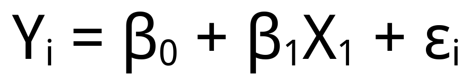
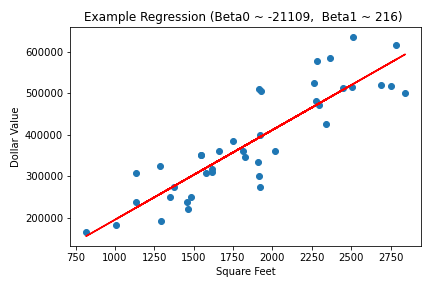

Linear Regression
Linear Regression is a statistical tool used to predict values based on input variables. Linear regression is a simple concept that can be grasped fairly easily. Let’s say we want to predict the value of a home. Let’s imagine that the square footage is the only indicator of value. So we then take the square footage and multiply that by some number. We would also assume that there is some minimal value that any home in the area has. We then just add those numbers together! Now what if houses have two predictive qualities. Let’s say how old the house is. Well we then just times the age of the house by some number and add it to our total, easy! You may now be wondering how we determine what numbers to use to multiply our variables by. Well the bad news is that most of the time we are just guessing. However, we can put a house that we know that value into whatever formula we create and then test how good it is. If it performs well for a lot of houses with known values we can then try to predict unknown values! There are a lot of strategies for improving our weights and the bias (baseline number) but we won’t get into that at the moment. For now take a look at the following equation:
Here y is the value we are predicting. Beta0 is our bias. Beta1 is our first weight which we times by x1 which is our first value we can have as many values and weights as we need represented by the ellipses to Beta p / x p. We can ignore the epsilon for actually running this in the real world. It represents unavoidable error. Below is an image showing how this equation's predictions might match up against the actual values. The equation will always produce a straight line so there will almost always be some gap between predictions and the actual value.
